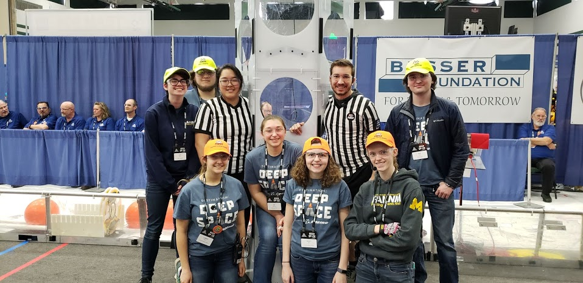

Joining FAMNM
FAMNM is open to all University of Michigan students. Our members come from many different backgrounds, colleges, and majors, and some have never even participated in FIRST® before! We know that as a UofM student, your schedule is tight. FAMNM lets you put as much or as little in as you want and works completely around your schedule. Signing up is easy! Just join us on Maize Pages and we'll get in touch.
If you have any questions, feel free to send them to famnm.secretary@umich.edu
Membership
Roll over an image for more details!
Volunteers

General Members

Mentors